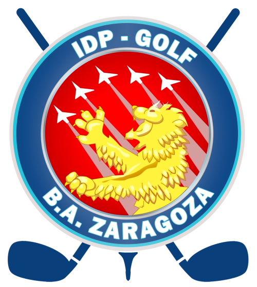

La Bolera
El lugar de nuestros encuentros y celebraciones después del golf. Gracias por acompañar el torneo.
Gracias a quienes hacen posible que Palo y Cuchara siga creciendo como punto de encuentro deportivo y social.
El golf se disfruta todavía más cuando va acompañado de amistad y buenos momentos.

Una bodega de Cariñena que une tradición e innovación. Gracias por formar parte de Palo y Cuchara.
Visitar su web ↗
El campo y punto de encuentro en el que compartimos nuestras jornadas de competición.
Información del campo ↗El lugar de nuestros encuentros y celebraciones después del golf. Gracias por acompañar el torneo.